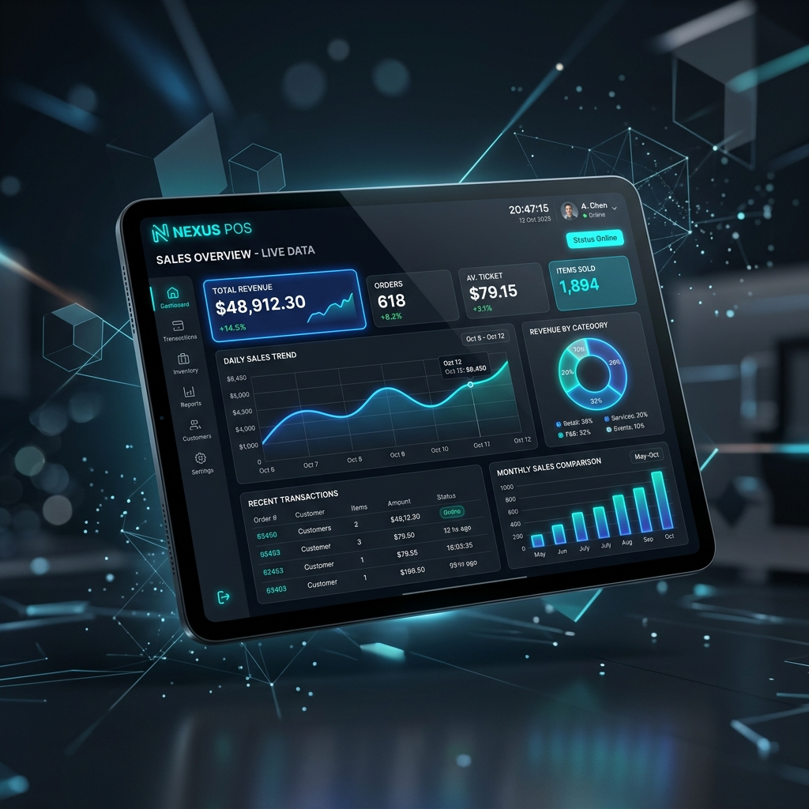

Billing & Checkout
- Create invoices instantly
- Multiple payment methods
- Discount support
- Customer management
- WhatsApp invoice sharing
Windows App v1.0.0
Smart Billing & Inventory Management for Retail Shops
Manage billing, inventory, customers, and subscriptions from a single platform.

App Preview
Clean checkout flows, stock visibility, and customer actions are kept close so shop teams can move fast.
Features
Download Setup
Install the latest official version of NexBill POS on your Windows PC or billing terminal to start checkout operations immediately.
Installation Guide
FAQ
Yes. NexBill POS supports GST-ready billing workflows for retail shops.
Yes. You can share invoices with customers over WhatsApp after billing.
Since NexBill POS is a desktop app, Windows SmartScreen may flag it on first run. Click on "More info" and select "Run anyway" to complete the installation setup.
Contact Support
Our team can help you download, install, and log in to your NexBill account.